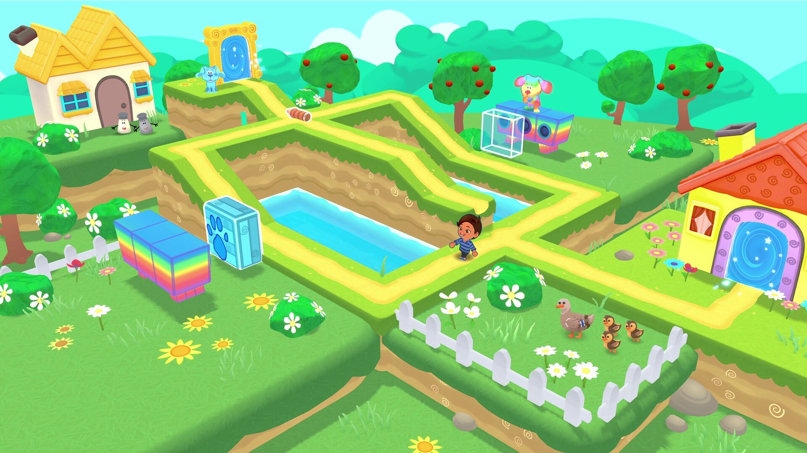

Early on in the project we decided to have simple predefined paths for the Characters to follow. For that I created a tool that allowed designers to easily create these paths by manually placing nodes on the level, which would automatically attach and generate the paths.
Each node connection could be edited to be set as a Jump, allowing the Character to try to jump to reach the next node instead of walking. Overall the tool worked pretty well and designers were happy as they could easily iterate the levels.

Some time before pre-production of the project, I started working on a Behavior Tree Tool for any of Melbot Studios' Unity projects.
After successfully using it in a couple of prototypes, the tool was ready for production and was fully utilized for any AI needs of the project.
In particular it was used for two types of Character AI, the Party AI and the Level AI.
I worked on implementing the base locomotion of the Characters utilizing Unity's RigidBody. The whole thing was implemented as a simple FSM handling states like Moving, Jumping, Falling, Interacting, Waiting, Flying, Emoting, etc
I've also worked on prototyping with the Design team many physics-based traps for the game like bubbles that pushed the Character around the air, jump pads, teleporters, moving obstacles, whirlwinds...
Worked with the design team to implement the customization of the player character. This involved the creating a UI where the user can select different items under categories such as Head, Body, Neck, etc and equip them to the character model to customize it.